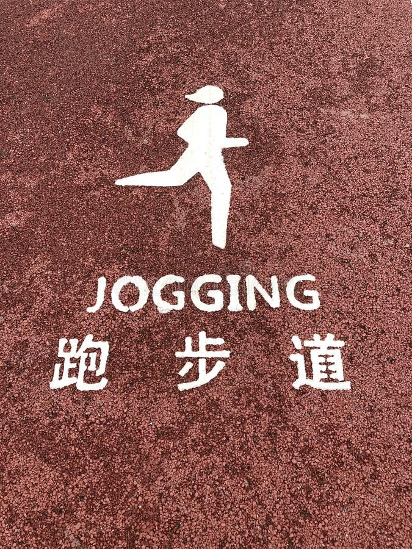
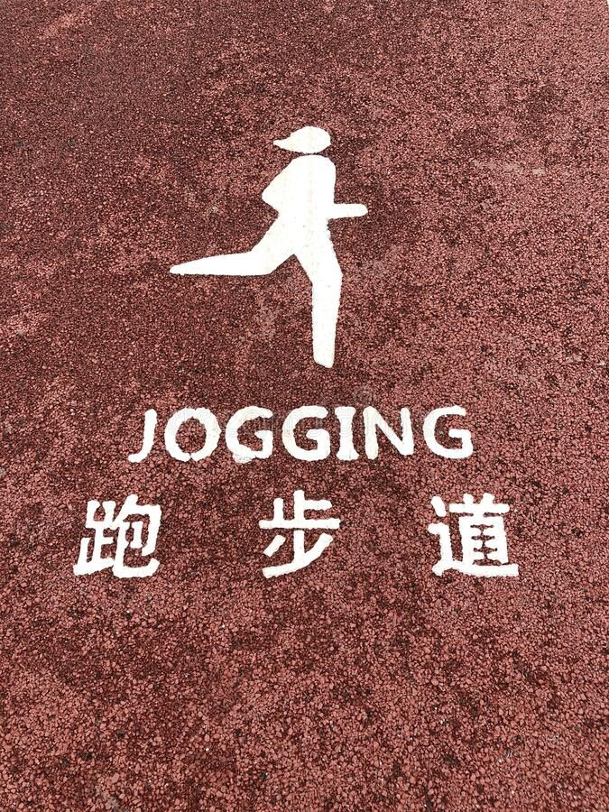

Fitness & Group Activity Etiquette
Learn proper conduct for jogging, cycling, group workouts, and using fitness equipment. Discover strategies for coordinating with other users and preventing conflicts during activities.
Jogging and Running Rules
Parks provide excellent spaces for jogging and running, offering a more pleasant environment than city streets. However, runners share these spaces with many other users and must do so considerately.
 

General Jogging Etiquette
- Use designated paths: Stick to paths meant for running. Don't cut through grass, garden areas, or quiet zones.
- Run on the right: Like walking, run on the right side of paths to maintain predictable traffic patterns.
- Announce when passing: Call out "on your left" or "passing" when approaching slower users from behind. Give them time to react before passing.
- Pass with care: Give plenty of clearance when passing others, especially the elderly, children, and those with mobility aids.
- Slow down when needed: Reduce speed in crowded areas, near playgrounds, at intersections, and when visibility is limited.
- Stay aware: If using headphones, keep volume low enough to hear approaching users, cyclists, and warnings.
- Control your sweat: Be aware that running generates sweat—avoid shaking off or getting too close to seated visitors.
Running Direction and Loops
Many parks have established running directions for their main loops. This prevents head-on encounters between runners moving at speed. If you're new to a park:
- Observe which direction other runners are moving
- Look for posted signs indicating preferred direction
- Ask regular park users about the convention
- If there's no established direction, run on the right and be prepared for oncoming traffic
Early Morning and Evening Running
Peak running times have special considerations:
- Dawn running: Share paths with tai chi groups, meditation practitioners, and elderly walkers. Modify your route or slow down around these activities.
- Visibility: In low light, wear bright or reflective clothing so others can see you approaching.
- Noise: Early and late hours call for quieter behavior—heavy breathing and footfalls are expected, but avoid loud music or talking.
- Safety: Stay on lit paths when possible and remain alert to your surroundings.
Cycling Rules
Cycling in parks offers a pleasant alternative to road cycling, but cyclists must remember they are typically the fastest users on shared paths and bear extra responsibility for safety.
Basic Cycling Etiquette
- Know where cycling is allowed: Not all park paths permit cycling. Obey posted signs and stay off pedestrian-only paths.
- Moderate your speed: Park paths are not for racing. Maintain speeds that allow you to stop quickly if needed.
- Use a bell or voice: Always announce your approach to pedestrians. A bell works well, but a friendly "passing on your left" is also effective.
- Give wide berth: When passing, give pedestrians as much space as possible, especially children, dogs, and groups.
- Yield to pedestrians: Pedestrians always have right of way on shared paths. Slow down or stop if needed.
- Dismount when required: In crowded areas, near playgrounds, or on narrow bridges, dismount and walk your bike.
- Control your bike: Keep both hands ready to brake. Don't ride with no hands, text while riding, or carry items that impair control.
Special Situations
- Children: Children are unpredictable—slow to near-walking speed when passing children, and be prepared for sudden movements.
- Dogs: Leashes can cross paths unexpectedly. Pass dogs and their owners as a unit, not between them.
- Groups: Wait for groups to organize themselves; don't try to squeeze through gaps that may close.
- Oncoming cyclists: Both cyclists should move right. Make eye contact and acknowledge each other.
Group Workout Coordination
Group exercise—whether fitness classes, running groups, or informal workout buddies—brings special energy to parks but requires coordination with other users.
Planning Group Activities
- Choose appropriate locations: Select open areas away from quiet zones, pathways, and playgrounds. Fields and designated activity areas are ideal.
- Consider timing: Avoid peak hours if your group is large or activities are space-intensive. Early morning or later afternoon often works well.
- Check for permits: Large groups (typically 20+) or activities using equipment may require permits. Check with park management.
- Notify park staff: Even if a permit isn't required, informing staff of regular group activities helps them plan and accommodate you.
During Group Workouts
- Contain your footprint: Keep activities within a defined area. Don't let participants drift into pathways or other users' spaces.
- Control noise: Count reps and give instructions at moderate volume. Avoid sustained shouting, screaming, or amplified sound.
- Watch for passersby: Position a group member to warn when pedestrians approach so activities can pause or participants can make room.
- Clean up equipment: If you bring cones, weights, mats, or other equipment, remove all of it when you finish.
- Leave no trace: Leave the area as you found it or cleaner.
Running Groups
- Single file on paths: When running as a group on shared paths, form single file to allow passing.
- Announce the group: Lead runner calls out "group coming" to alert pedestrians that multiple runners are approaching.
- Pass efficiently: The group passes pedestrians as a unit, then reforms, rather than stringing out across a long distance.
- Avoid blocking intersections: Don't stop for regrouping at path intersections where you'll block traffic.
Sharing the Dawn
Early morning is peak time for both fitness groups and traditional activities like tai chi and meditation. These activities can coexist harmoniously with mutual respect. Fitness groups should position themselves away from quiet activities, moderate noise levels, and respect that others also came early seeking a particular atmosphere. Tai chi groups should recognize that their activity, while quieter, also uses shared space that others may need to navigate around.

Using Equipment Safely
Many parks offer outdoor fitness equipment—chin-up bars, parallel bars, exercise machines, and more. Using this equipment safely and sharing it fairly requires awareness and consideration.
Personal Safety
Inspect equipment, warm up, know your limits
Sharing Equipment
Time limits, working in, yielding to others
Hygiene & Maintenance
Clean after use, report damage, no modifications
Fitness Etiquette Lists and Examples
✓ Fitness DO's
- Announce your approach when passing others
- Slow down in crowded areas
- Share equipment with time limits
- Clean up after yourself and your group
- Yield to pedestrians when cycling
- Dismount bike in congested areas
- Use designated fitness areas for group workouts
- Keep noise at moderate levels
- Wear bright/reflective clothing in low light
- Report damaged equipment
- Warm up before using equipment
- Be patient with slower users
✗ Fitness DON'Ts
- Sprint through crowded areas
- Use headphones so loud you can't hear warnings
- Monopolize equipment when others are waiting
- Cut through quiet zones or gardens
- Play music through speakers during workouts
- Leave equipment or mats behind
- Shout or use amplified instruction
- Pass pedestrians with insufficient clearance
- Exercise in children's playground areas
- Ignore other users' space needs
- React angrily to accidental conflicts
- Use paths for speed training during peak hours
Quick Reference Checklist
Before Your Workout
- Check park hours and any fitness area closures
- Bring appropriate footwear and clothing
- Choose a time that matches your activity intensity
- Ensure headphones allow ambient sound awareness
- Carry a bell if cycling
- For groups, choose a suitable location away from quiet zones
During Your Workout
- Stay on designated paths and areas
- Keep right, pass left with announcement
- Slow down in crowded areas
- Yield to pedestrians, especially elderly and children
- Share equipment with reasonable time limits
- Keep noise at considerate levels
- Watch for and avoid conflicts with other users
- Stay aware of your surroundings despite music or focus
After Your Workout
- Remove all equipment and personal items
- Wipe down shared equipment if sweaty
- Dispose of water bottles and any trash properly
- Report any damaged equipment or safety issues
- Cool down in appropriate areas, not blocking paths